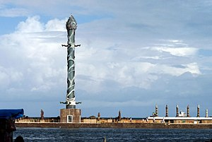

Parque das Esculturas Francisco Brennand
É um museu de arte a céu aberto. Constitui um dos principais feitos do artista plástico pernambucano Francisco Brennand. Idealizado na década de 1990 para comemoração dos 500 anos do descobrimento do Brasil, o parque foi inaugurado em 29 de dezembro 2000. Com 90 esculturas, sendo a principal obra a Torre de Cristal, com 32 metros de altura e confeccionada em argila e bronze.
Rua do Bom Jesus
Um dos principais símbolos da cidade do Recife, a rua do Bom Jesus, localizada no centro histórico da capital e eleita uma das vias mais bonitas do mundo, já é exclusiva para pedestres.